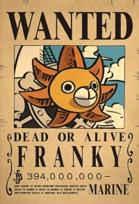

Hora de conhecer nosso robô Franky
Franky, seu nome verdadeiro é Cutty Flam, é um engenheiro naval da tripulação de Luffy e tem seu corpo modificado por partes mecânicas, ele usa garrafas de cola como combustível (uma curiosidade é que quando trocam seu combustível de cola para chá quente, por exemplo, sua personalidade é alterada). Franky sonha em construir um barco que seja capaz de conseguir atravessar o mundo e chegar na Ilha Raftel (a última ilha da Grande Linha), e o construtor da segunda embarcação dos Piratas do Chapéu de Palha, o Thousand SunnY.
Atualmente sua recompensa é de 398 milhões de Birries, e sim o cartaz do Franky é a foto do Sunny.
Poderes do nosso Franky Shogun
Características Físicas Sobre-Humanas, Mestre Boxeador, Inteligência Genial, Maestria de Armas, Cibernetificação (Alterou todo o seu corpo externo com funções tecnológicas, se transformando em um ciborgue quase completo), Manipulação do Fogo (Pode cuspir bolas de fogo e unhas da sua boca), e ainda tem como força sua forma shogun onde ele encaixa o Kurosai FR-L lV e o Brânquio Tanque V. Apesar de possuir várias vezes o tamanho de uma pessoa média, é ainda menor do que Chopper em seu Monster Point, e bem menor do que o gigante médio. Ele é construído a partir de Wapometal.